Praktikum 5 PROJECT: Expense Tracker dengan SQLite
A. Pendahuluan
Aplikasi mobile membutuhkan navigasi yang terstruktur agar pengguna dapat berpindah dari satu halaman ke halaman lain dengan mudah. Pada Flutter, perpindahan halaman dapat diatur menggunakan Named Routes, sedangkan BottomNavigationBar menyediakan menu untuk mengakses halaman utama. Pengelolaan state diperlukan agar tampilan dapat diperbarui setelah pengguna memilih menu atau melakukan perubahan data.
Source code pada file ZIP membentuk aplikasi Expense Tracker yang terdiri dari halaman splash, login, registrasi, dashboard, tambah transaksi, riwayat transaksi, dan profil. Proyek menggunakan SQLite melalui paket sqflite untuk menyimpan data pengguna dan transaksi secara lokal. Layanan AuthService mengatur proses registrasi, login, sesi pengguna, dan logout, sedangkan Dashboard dan Riwayat mengambil data dari database untuk ditampilkan kepada pengguna.
B. Tujuan
Tujuan dari praktikum ini adalah:
- Memahami penerapan Named Routes untuk menghubungkan halaman-halaman pada aplikasi Flutter.
- Menerapkan BottomNavigationBar untuk berpindah antara Dashboard, Riwayat Transaksi, dan Profil.
- Membuat halaman splash, login, dan registrasi dengan validasi input pengguna.
- Memahami penggunaan SQLite untuk menyimpan data pengguna dan transaksi secara lokal.
- Menerapkan operasi tambah dan baca transaksi serta perhitungan pemasukan, pengeluaran, dan saldo.
- Memahami pengelolaan sesi login serta proses logout pengguna.
C. Isi
Fungsi main() menjadi titik awal aplikasi. WidgetsFlutterBinding.ensureInitialized() memastikan binding Flutter siap sebelum proses inisialisasi yang diperlukan. runApp() menjalankan widget utama ExpenseTrackerApp. Di dalam MaterialApp, initialRoute: '/splash' menentukan halaman pertama yang dibuka, sedangkan routes mendaftarkan nama rute beserta widget halaman tujuan. Pendaftaran ini membuat navigasi dapat dipanggil memakai nama rute seperti /login, /main, dan /add.
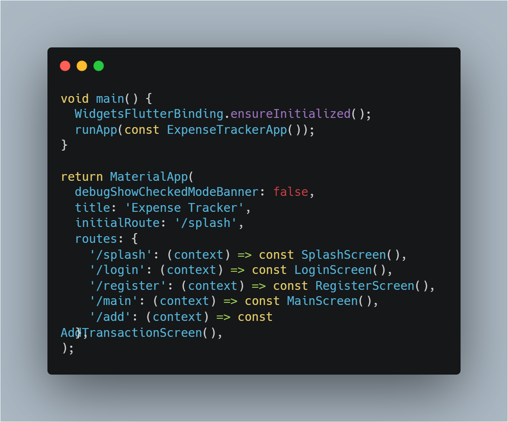
Kelas User merepresentasikan data akun, seperti nama, email, nomor telepon, password, waktu pembuatan akun, dan login terakhir. Kelas ExpenseTransaction merepresentasikan transaksi keuangan. userId menghubungkan transaksi dengan pemiliknya, amount menyimpan nominal, category menyimpan kategori transaksi, sedangkan isIncome membedakan pemasukan (true) dan pengeluaran (false). Tipe final menandakan nilai properti tidak diubah setelah objek dibuat.
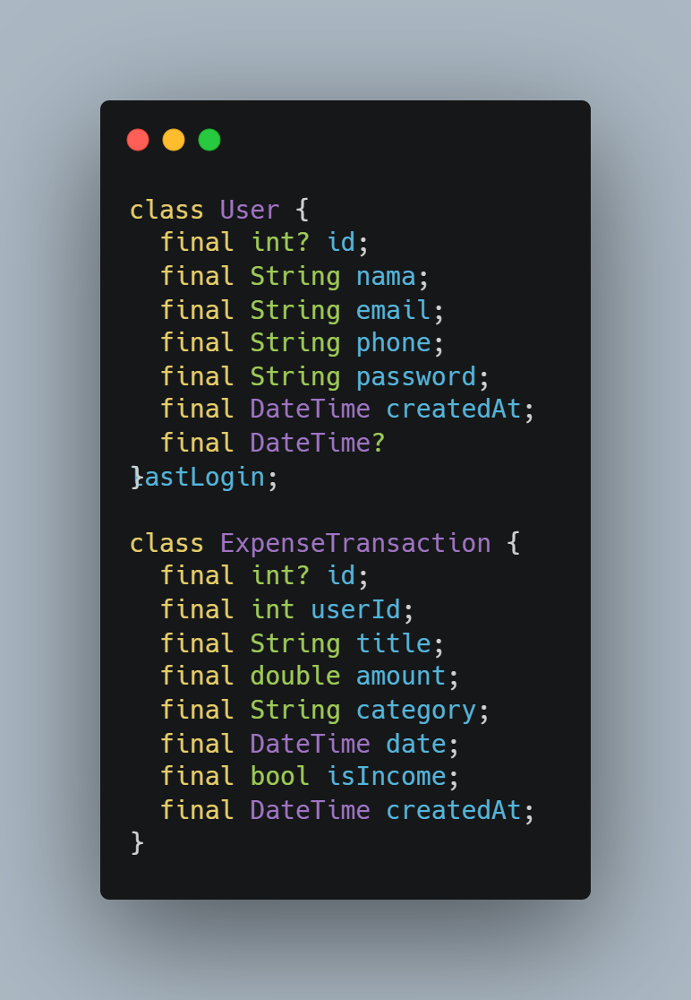
getDatabasesPath() mengambil lokasi penyimpanan database lokal, lalu join() membentuk lokasi file bernama expense_tracker.db. openDatabase() membuka atau membuat database. Callback onCreate dijalankan saat database pertama kali dibuat. Tabel users menyimpan data akun dan memberi batas UNIQUE pada email agar satu alamat email tidak terdaftar lebih dari sekali. Pada file sumber, tabel transactions juga dibuat untuk menyimpan transaksi, termasuk user_id, judul, nominal, kategori, tanggal, jenis transaksi, serta waktu pencatatan.
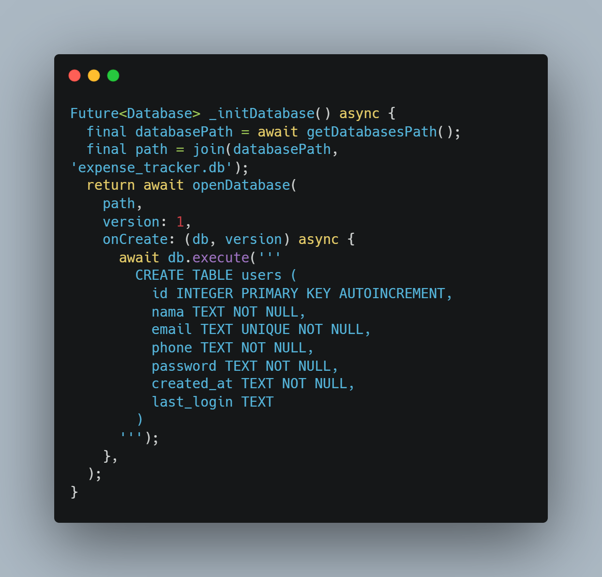
Pola singleton membuat pemanggilan DatabaseHelper() menggunakan satu instance bersama, bukan membuat objek helper baru setiap kali. Getter database memeriksa apakah database sudah dibuka. Jika sudah, objek yang tersimpan dikembalikan; jika belum, _initDatabase() dipanggil untuk menginisialisasikannya. Pola ini membantu mengelola akses database secara terpusat.
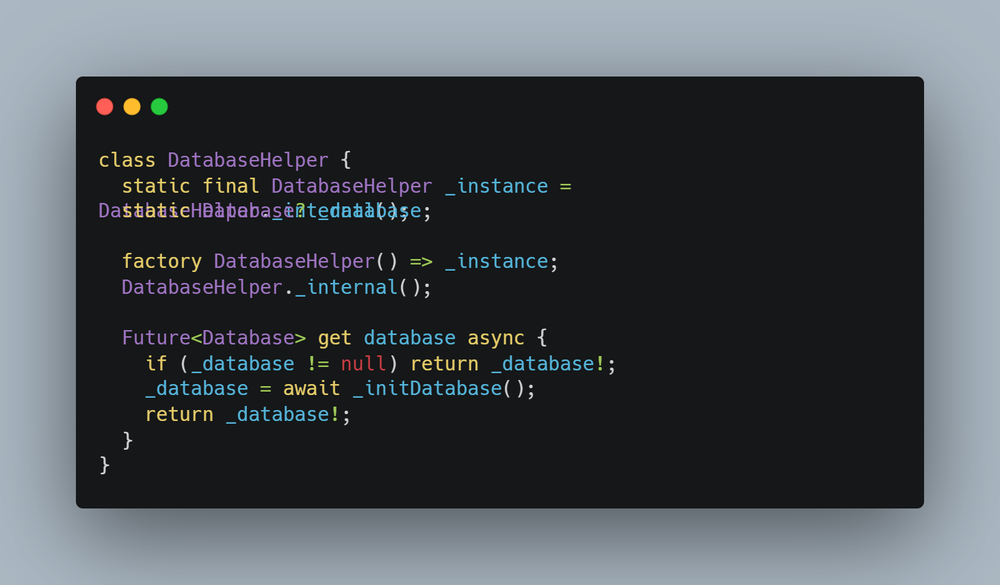
Method insertTransaction() menerima objek transaksi, mengambil koneksi database, lalu menyimpan data ke tabel transactions. toMap() mengubah objek menjadi pasangan nama kolom dan nilai yang dapat disimpan SQLite. ID hasil penyimpanan dimasukkan kembali ke objek melalui copyWith(), sehingga transaksi yang dikembalikan memiliki ID database.
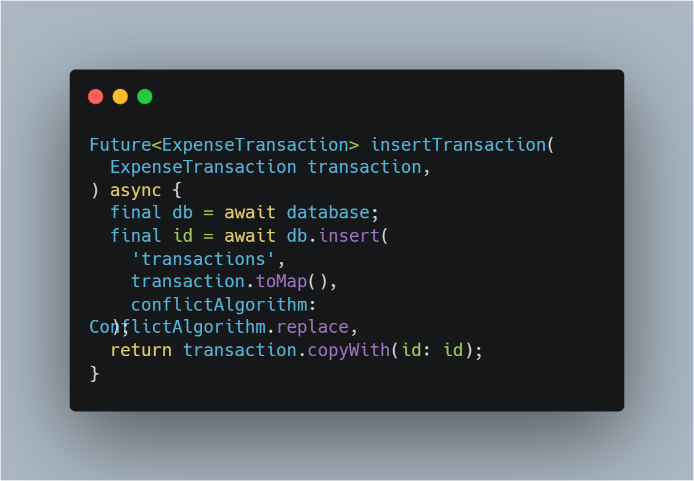
_selectedIndex menyimpan indeks tab yang aktif. Method _onItemTapped() memanggil setState() agar Flutter membangun ulang tampilan sesuai pilihan tab. IndexedStack menampung Dashboard, Riwayat Transaksi, dan Profil serta menampilkan anak berdasarkan indeks yang dipilih. Callback onViewHistory mengarahkan pengguna dari Dashboard ke tab Riwayat. Key pada Dashboard dan Riwayat juga dapat diperbarui ketika transaksi baru ditambahkan agar datanya dimuat ulang.
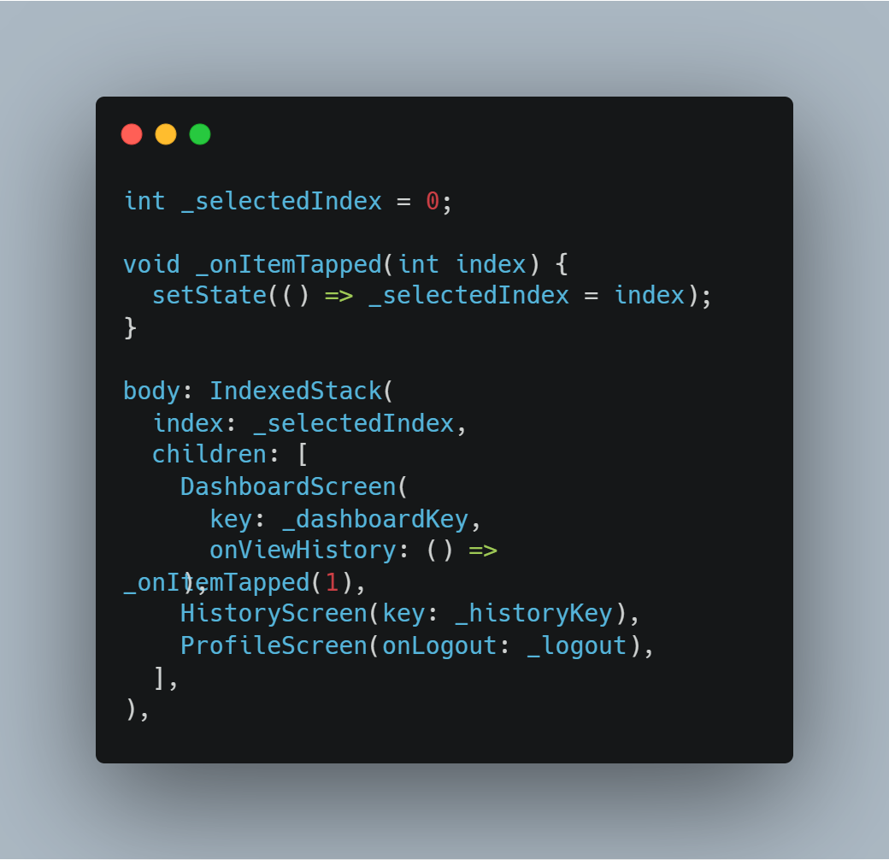
Dashboard mengambil transaksi milik pengguna yang sedang login, lalu meminta total pemasukan, total pengeluaran, dan saldo dari DatabaseHelper. transactions.take(3) membatasi daftar pada tiga transaksi terbaru. setState() memperbarui variabel tampilan setelah data diperoleh, sedangkan mounted memastikan widget masih aktif sebelum perubahan state dilakukan. Nilai-nilai ini kemudian dipakai untuk menampilkan ringkasan keuangan.
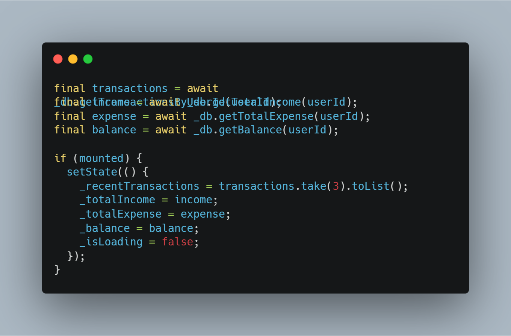
getBalance() memperoleh total pemasukan dan total pengeluaran berdasarkan ID pengguna, lalu menghitung saldo dengan rumus pemasukan dikurangi pengeluaran. Method ini mengembalikan nilai double sehingga dapat menampung nominal dengan angka desimal. Kedua total dihitung dari catatan transaksi yang tersimpan di database.
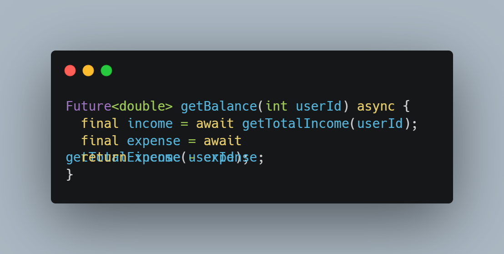
Nominal dari kolom input dibersihkan dan diubah menjadi double. Aplikasi lalu membentuk objek ExpenseTransaction yang berisi ID pengguna, judul, nominal, kategori, tanggal, jenis transaksi, dan waktu pencatatan. Objek disimpan melalui insertTransaction(). Setelah berhasil, Navigator.pop(context, true) menutup halaman input dan mengembalikan nilai true kepada halaman sebelumnya sebagai tanda bahwa data baru ditambahkan.
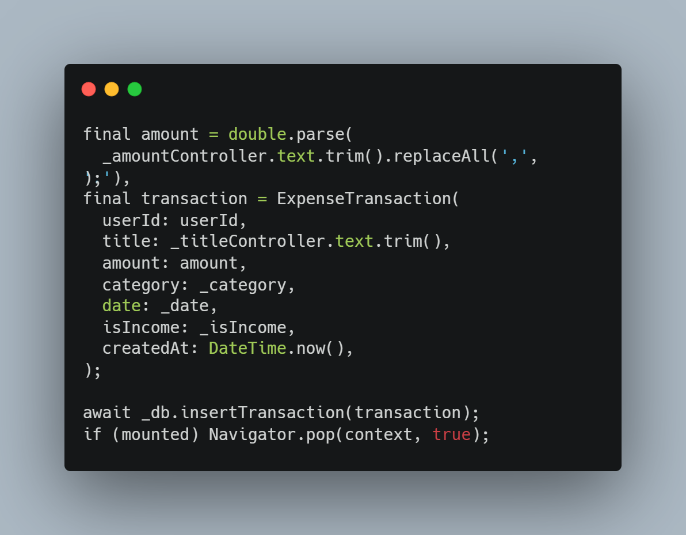
Splash screen menunggu animasi awal dan pemeriksaan sesi login berjalan. AuthService().initialize() memeriksa data sesi yang tersimpan. Jika pengguna masih memiliki sesi yang valid, aplikasi mengganti halaman ke /main; jika tidak, aplikasi diarahkan ke /login. pushReplacementNamed() mengganti halaman splash sehingga pengguna tidak kembali ke splash ketika menekan tombol kembali.
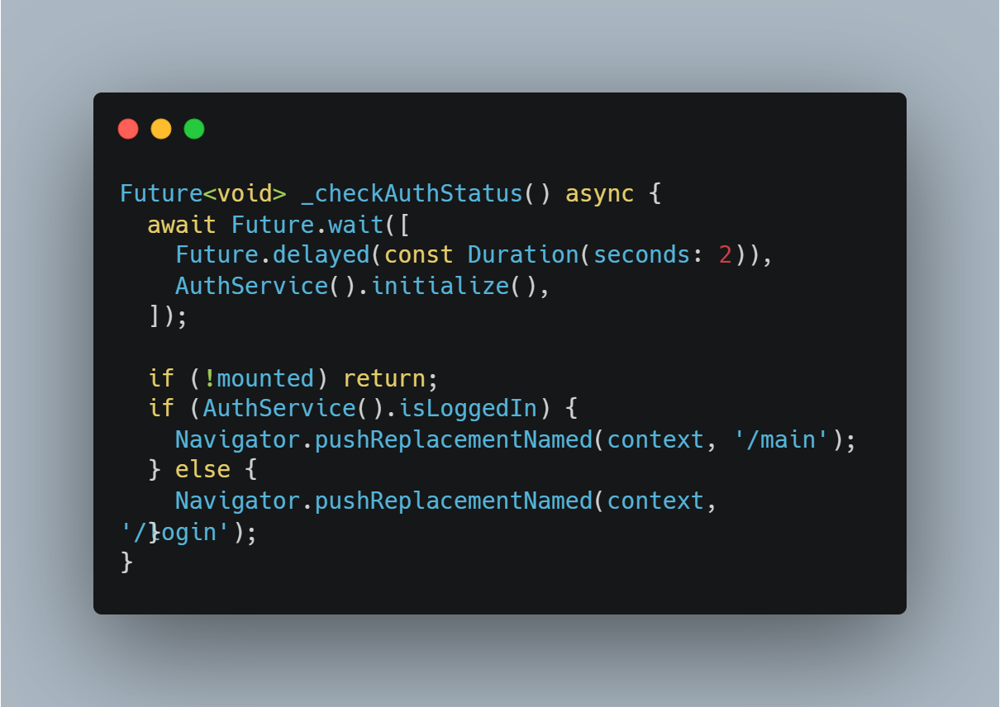
Form divalidasi sebelum proses login dilakukan. Jika input tidak valid, fungsi dihentikan. Saat proses berlangsung, _isLoading diubah menjadi true untuk menandai bahwa aplikasi sedang memproses permintaan. Email dan password dikirim ke AuthService. Jika hasil login menyatakan berhasil, pengguna diarahkan ke /main dan rute sebelumnya dihapus dari tumpukan navigasi. Kode lengkap juga menampilkan pesan melalui SnackBar ketika login berhasil atau gagal.
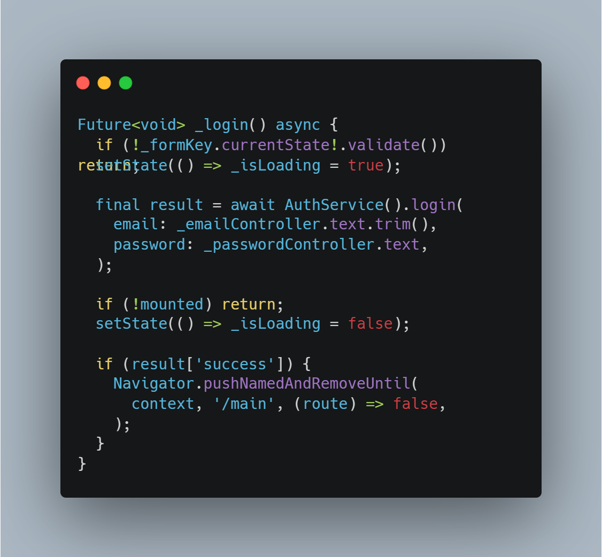
Form registrasi memvalidasi semua masukan terlebih dahulu. Data nama, email, nomor telepon, dan password kemudian dikirim ke AuthService.register(). Status loading diperbarui selama proses berlangsung. Jika registrasi berhasil, pengguna langsung masuk ke halaman utama. Pada kode lengkap, pesan SnackBar juga ditampilkan untuk memberi tahu hasil proses registrasi.
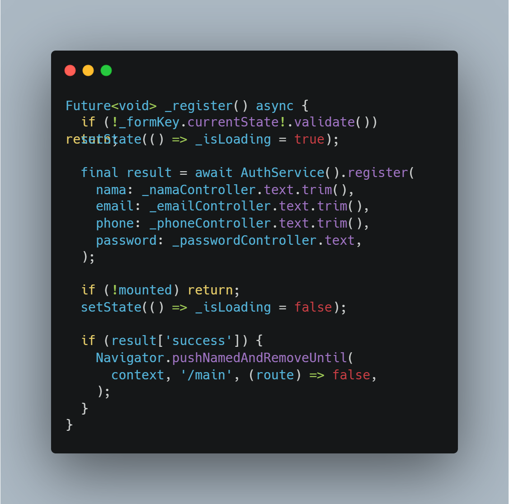
AuthService meminta DatabaseHelper memverifikasi email dan password. Jika akun tidak ditemukan atau kredensial tidak cocok, hasilnya menyatakan login gagal. Jika cocok, waktu login terakhir diperbarui, sesi disimpan, dan objek pengguna ditetapkan sebagai _currentUser. Data pengguna aktif ini digunakan oleh Dashboard dan Profil. Pada operasi registrasi, layanan juga memeriksa format email, nomor telepon, panjang password, serta email yang sudah terdaftar.
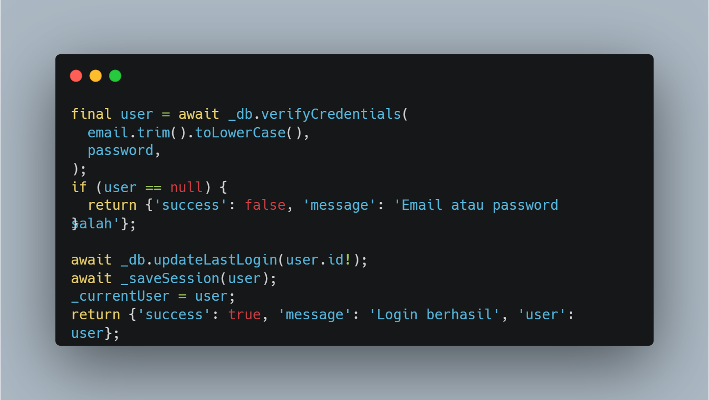
Fungsi _hashPassword() mengubah password menjadi byte UTF-8, lalu menghitung hash SHA-256 dan mengembalikan hasilnya sebagai teks. Pada proses simpan akun, nilai hash digunakan untuk menggantikan password asli di database. Saat login, hash dari password yang dimasukkan dibandingkan dengan hash yang tersimpan. Hash bukan enkripsi yang dapat dibalik, tetapi untuk sistem produksi sebaiknya digunakan skema penyimpanan password yang dirancang khusus seperti Argon2id, scrypt, atau bcrypt dengan salt.
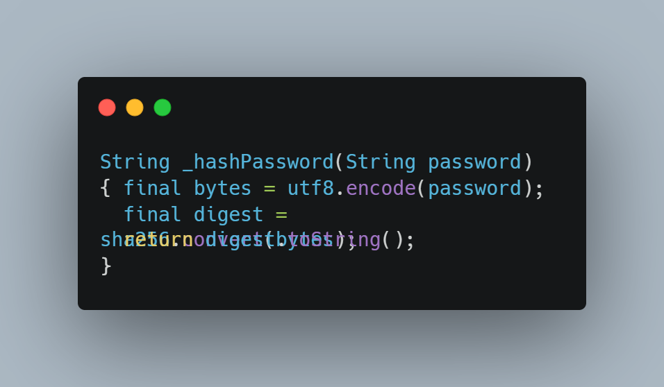
Halaman riwayat mengaktifkan status loading lalu mengambil ID pengguna aktif. Jika ID tersedia, daftar transaksi pengguna tersebut dibaca dari database. Hasilnya disimpan ke _transactions dan ditampilkan dalam daftar. Jika belum ada data, layar menampilkan pesan bahwa riwayat masih kosong. RefreshIndicator memungkinkan pengguna menarik layar ke bawah untuk memuat data terbaru.
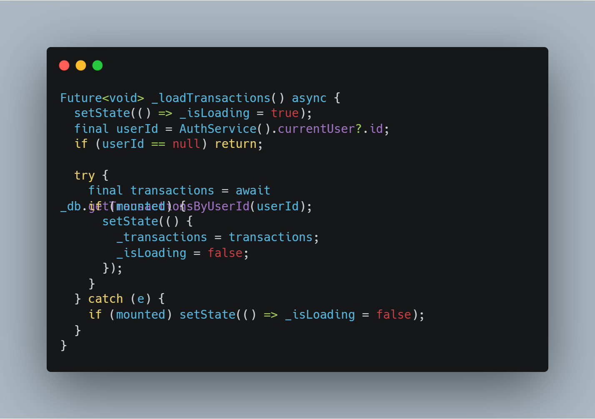
Profil mengambil data pengguna yang sedang aktif melalui AuthService. Jika data tidak tersedia, aplikasi menampilkan pesan. Jika tersedia, nama, email, dan nomor telepon dipakai untuk mengisi informasi profil. Huruf pertama nama digunakan sebagai avatar berbentuk lingkaran. Tombol logout pada layar ini menampilkan dialog konfirmasi sebelum memanggil callback onLogout.
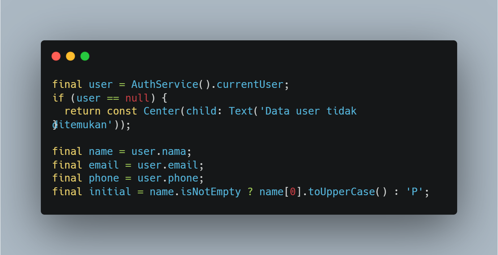
SharedPreferences digunakan untuk menyimpan informasi sesi sederhana. Saat logout, ID pengguna dihapus, penanda is_logged_in diatur menjadi false, lalu _currentUser dikosongkan. MainScreen selanjutnya mengarahkan pengguna kembali ke halaman login dan menghapus rute sebelumnya agar halaman utama tidak tetap berada di tumpukan navigasi.
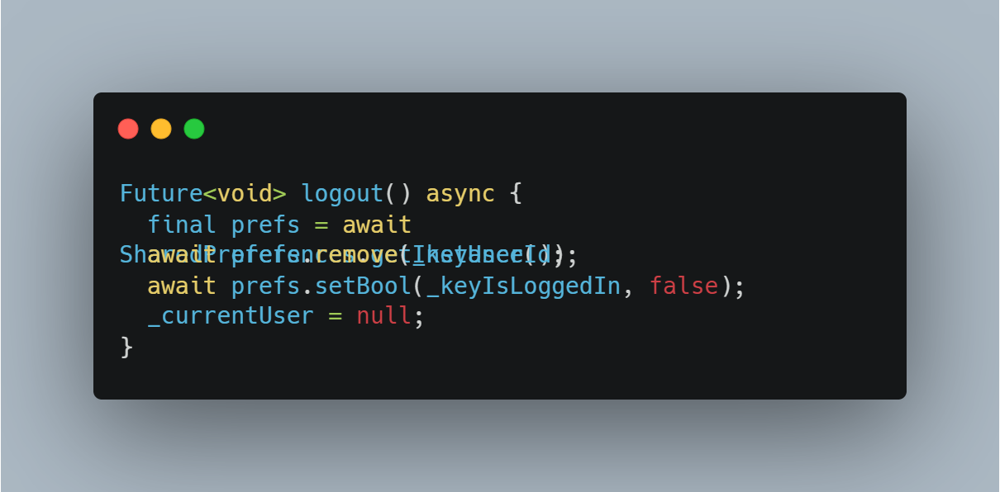
formatRupiah() membulatkan nominal dan menambahkan tanda titik sebagai pemisah ribuan, kemudian memberi awalan Rp. formatDate() menampilkan tanggal dengan urutan hari/bulan/tahun serta menambahkan nol di depan hari atau bulan jika nilainya hanya satu digit. Fungsi formatter dipakai agar nominal dan tanggal pada Dashboard, Riwayat, atau Profil tampil konsisten.
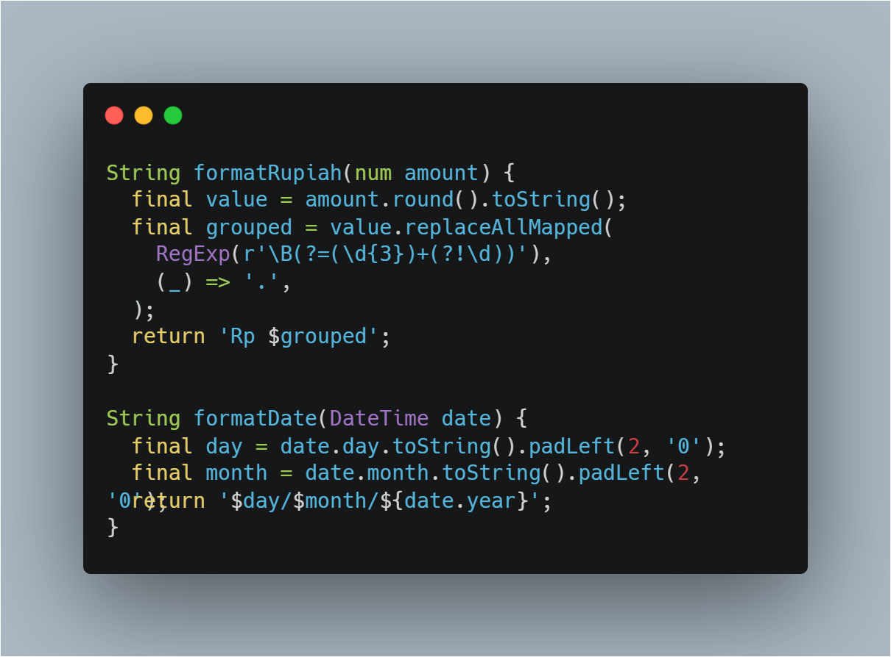
D. Kesimpulan
Aplikasi Expense Tracker menerapkan Named Routes dan BottomNavigationBar untuk menghubungkan halaman splash, login, registrasi, Dashboard, Riwayat, Profil, serta form transaksi. Data pengguna dan transaksi disimpan di SQLite, sementara AuthService mengelola autentikasi dan sesi. Dashboard menghitung pemasukan, pengeluaran, dan saldo. Source code menggunakan hash SHA-256 langsung untuk password; untuk penggunaan produksi, sebaiknya gunakan algoritma password hashing khusus dengan salt.